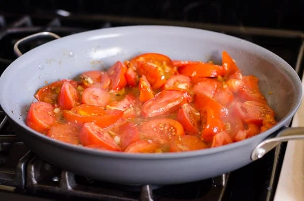
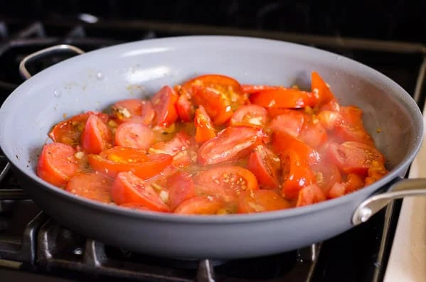

Homemade Chicken Tikka Masala Recipe
Origin: India Source: https://tasty.co/recipe/homemade-chicken-tikka-masala Category: Main Dish
My daughter learned to make these cookies at a baking camp at Zingermanns and has tweaked the recipe to fit the taste buds of her siblings. They are extremely sugary so the salt helps to balance it. Note, these cookies are best eaten very quickly.
Recipe Ingredients
Chicken Marinade
- 3 boneless, skinless chicken breasts
- ½ cup plain yogurt
- 2 tablespoons lemon juice
- 6 cloves garlic, minced
- 1 tablespoon minced ginger
- 2 teaspoons salt
- 2 teaspoons ground cumin
- 2 teaspoons garam masala
- 2 teaspoons paprika
Sauce
- 3 tablespoons oil
- 1 large onion, finely chopped
- 2 tablespoons minced ginger
- 8 cloves garlic, minced
- 2 teaspoons ground cumin
- 2 teaspoons ground turmeric
- 2 teaspoons ground coriander
- 2 teaspoons paprika
- 2 teaspoons chili powder
- 2 teaspoons garam masala
- 1 tablespoon tomato puree
- 3 ½ cups tomato sauce
- 1 ¼ cups water
- 1 cup heavy cream
- ¼ cup fresh cilantro, for garnish
- cooked rice, for serving
- naan bread, for serving
Recipe Steps
- Slice the chicken into bite-sized chunks.
- Combine the cubed chicken with the yogurt, lemon juice, garlic, ginger, salt, cumin, garam masala, and paprika and stir until well-coated.
- Cover and refrigerate for at least 1 hour, or overnight.
- Preheat the oven to 500°F (260°C). Line a high-sided baking pan or roasting tray with parchment paper.
- Place the marinated chicken pieces on bamboo or wooden skewers, then set them over the prepared baking pan, making sure there is space underneath the chicken to help distribute the heat more evenly. Bake for about 15 minutes, until slightly dark brown on the edges.
- Make the sauce: Heat the oil in a large pot over medium heat, then sauté the onions, ginger, and garlic until tender but not browned.
- Add the cumin, turmeric, coriander, paprika, chili powder, and garam masala and stir constantly for about 30 seconds, until the spices are fragrant. Stir in the tomato puree, tomato sauce, and 1 ¼ cups of water, then bring to a boil and cook for about 5 minutes. Pour in the cream.
- Remove the chicken from the skewers and add to the sauce, cooking for another 1-2 minutes. Garnish with cilantro and serve over rice or alongside naan bread.
- Enjoy!
Additional Food images


Peanut Butter and Jelly Sandwich
Origin: American Source: Alex Likens Category: Main Dish
This is a dish that is great at all times of year. Its mix of savory flavors with sweet jelly make sit a favorite dish for many people. This dish is great for any situation whether you are on the go, in a rush, or just looking for a tasty meal in your home.
Recipe Ingredients
- Bread
- Peanut Butter
- Jelly
Recipe Steps
- Take two pieces of bread and place them on a plate.
- Put a thick layer of jelly on one piece of the bread.
- Put a thick layer of peanut butter on the other piece of the bread.
- Put the two pieces of bread together so they face each other.
Additional Food images


Tomato and Eggs
Origin: China Source: Alex Ni Category: Main Dish
This is a tasty breakfast recipe.
Recipe Ingredients
- Tomatoes
- Eggs
- Salt
- Sugar
- Cooking oil
Recipe Steps
- Crack eggs into a bowl and mix until scrambled.
- Cut tomatoes into pieces around the size of your thumb.
- Oil a hot pan and cook the eggs until satisfied then remove the eggs.
- Re-oil the pan and cook the tomatoes until they loosen.
- Combine eggs and tomatoes and season with salt and sugar
Additional Food images
 
